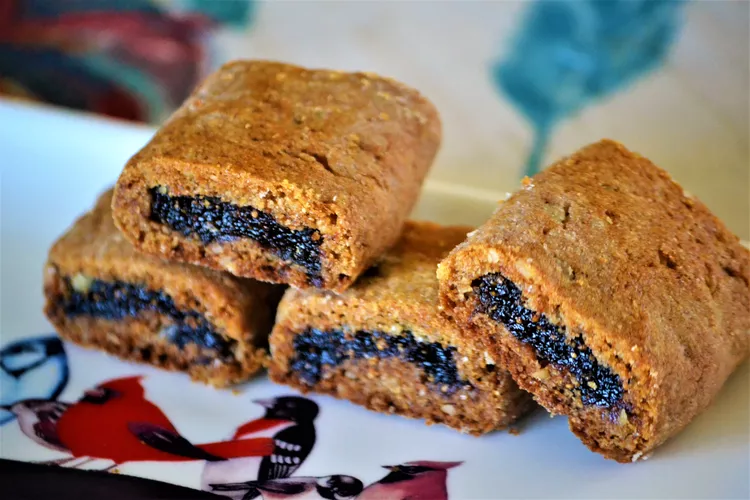

HOME
Homemade Fig Newtons

Description
This is a dark, not very sweet, fig-filled cookie, basically a homemade fig newton. The crust gets a toasty flavor from whole wheat flour and walnuts, while the fig filling really lets the dark flavor of the fruit come through. These are definitely better the next day, as the cookies soften and the flavors get a chance to meld together.
Ingredients
- ¾ cup whole wheat flour
- ½ cup finely ground walnuts
- ¾ teaspoon baking soda
- ¼ teaspoon salt
- ¼ teaspoon ground cinnamon
- ⅛ teaspoon ground nutmeg
- ¼ cup unsalted butter, softened
- 3 tablespoons brown sugar
- 2 tablespoons honey
- 1 large egg
- ¼ teaspoon grated orange zest
- 1 teaspoon vanilla extract
Fig Filling:
- 1 cup dried figs
- ½ cup water
- 4 tablespoons honey, or to taste
- 1 orange, juiced
- 1 teaspoon vanilla extract
- ½ teaspoon grated orange zest
- ¼ teaspoon ground nutmeg
- 1 pinch salt
Steps
- Combine whole wheat flour, ground walnuts, baking soda, salt, cinnamon, and nutmeg in a medium bowl.
- Beat butter, brown sugar, and honey together in a large bowl until light and fluffy. Add egg, orange zest, and vanilla extract; beat until thoroughly combined. Add flour mixture in 3 batches, mixing until just combined and dough is very soft and sticky.
- Wrap dough in plastic wrap. Pat into a disk and refrigerate, 4 hours to overnight.
- Place figs, water, honey, orange juice, vanilla extract, orange zest, and nutmeg in a medium saucepan. Bring filling mixture to a simmer over medium heat, stirring occasionally. Cook until figs are softened and fall apart easily when pressed with a spoon, about 15 minutes. Remove from heat and cool for 10 minutes.
- Place filling mixture into a blender or food processor and puree until smooth. Pour puree into a glass container and let cool completely until filling has a spreadable consistency. Refrigerate until ready to use.
- Preheat the oven to 350 degrees F (175 degrees C).
- Place a piece of parchment paper on a work surface and generously flour the paper and a rolling pin. Roll out the chilled cookie dough into a 10x14-inch rectangle about 1/4 inch thick. Continue to flour the parchment and rolling pin as necessary. Divide dough into 4 strips about 3 1/2 inches wide by 10 inches long.
- Divide the fig filling among the strips of dough. Spread filling lengthwise down the center of each piece, leaving about 1/2 inch of space on the sides. Gently pull one side of the dough halfway over the filling. Repeat with the opposite side and pinch to seal in the filling to form a cookie log about 1 inch wide and 10 inches long.
- Gently roll the log over so it's seam-side down. Brush off any excess flour and gently press the top of the roll to flatten slightly. Repeat this process with the other dough strips.
- Brush off any excess flour from the top of, and in between, the cookie logs. Gently lift the parchment paper, with the cookies still on it, onto a baking sheet. Arrange logs about 1 inch apart on the baking sheet.
- Bake in the preheated oven until cookies just begin to brown and feel slightly crispy to the touch, 20 to 25 minutes. Let cookies cool for 5 minutes. Use a serrated knife to slice each log into 8 pieces about 1 1/4 inch long and 1 inch wide. Let cookies cool completely, at least 40 minutes.
- Store cooled cookies in an airtight container until softened, 8 hours to overnight.